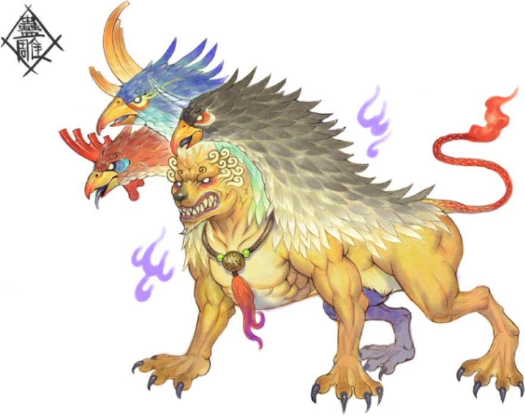
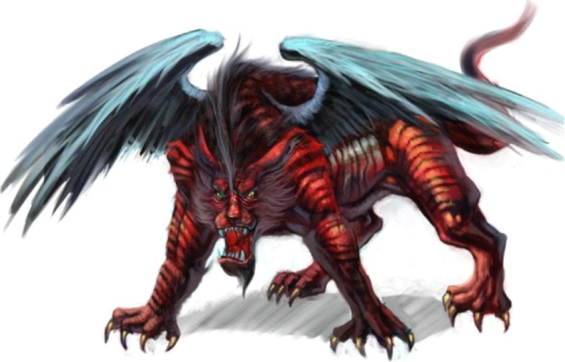

一 · 褪去獠牙
最直接的一步是减法：露齿的口收起来，爪从抓握改为踏地，眼从瞪视改为平视。攻击性的部件被拆掉，形象立刻从「会吃人」变成「可以靠近」。
这一步不改变兽的形貌，只改变它对人构成的威胁。
同一个形象，在《山海经》里可能是「是食人」，到了明清却成了要进贡的祥瑞。凶与瑞之间，隔着两千年的改写。


拖动中间的金线，或用键盘左右方向键切换。左为图鉴中的凶兽一路，右为后世常见的瑞兽一路；两图均为艺术演绎，不代表同一只兽的原始形象。
先记录、再解释、最后仪式化。
先秦
《山海经》记异兽，多止于形、声、性与后果：状如什么、音如什么、食不食人、见则如何。它很少说这兽是善是恶，凶与瑞的分界在这套写法里并不重要。
《春秋·哀公十四年》只留下「西狩获麟」四个字；到《公羊传》等注家，麟才被解作「仁兽」，并添上「有王者则至」的条件。
《山海经》异兽条目通行本；《春秋》《公羊传》哀公十四年汉
汉代祥瑞之说盛行，瑞兽被用来对应德政与天命，图像的职责从记录形状转向传达吉意：姿态从扑击改为静立，面部的獠牙与利爪让位给纹饰与对称。
《说文解字》释「麒」为「仁兽」，把德行直接写进字义，是这一转向在文献里的痕迹。
《说文解字》；汉代祥瑞与谶纬的一般叙述明清
永乐年间，榜葛剌遣使进献「麒麟」，沈度作《瑞应麒麟图》纪其事，中国国家博物馆藏有《榜葛剌进麒麟图》。学界一般认为画中所绘即长颈鹿。
走到这一步，瑞兽已经不只是图像：它是一次外交事件、一份祥瑞公文、一张被反复临摹的画。
《榜葛剌进麒麟图》，中国国家博物馆藏不改物种，只改画法与语境。

最直接的一步是减法：露齿的口收起来，爪从抓握改为踏地，眼从瞪视改为平视。攻击性的部件被拆掉，形象立刻从「会吃人」变成「可以靠近」。
这一步不改变兽的形貌，只改变它对人构成的威胁。

没法减的部件就换成装饰：云纹、卷草、飘带、宝相花。纹样本身不凶猛，却填满了原本该出现肌肉与骨骼的位置。
凤凰一路最典型：鸟身上的「文」被读成德目，于是羽色越繁，吉意越足。

最彻底的一步是换语境。应龙在《山海经》里是参战的角色，杀蚩尤与夸父；后世求雨时，人们照着它的样子造像，它就成了雨水的来源。
形象没变，故事没变，只是它从战场走进了祭坛与年画。
同一只兽，两套说法，分开放。
「其状如雕而有角，其音如婴儿之音，是食人。」——《山海经·南山经》记蛊雕，只写形、声与后果，不加褒贬。
「应龙处南极，杀蚩尤与夸父。」——《大荒东经》里的应龙是战将，理水与降雨尚未成为它的主要职责。
「麒，仁兽也。」——《说文解字》直接把德行写进字义，瑞兽的「仁」从字形层面被确定下来。
明清的麒麟图、年画里的瑞兽、今天文创里的「国潮神兽」，都在这一层继续加工；它们与《山海经》的原文隔着一整套再解释。
本站的处理：凡属后世演绎的段落，一律标注「后世」，不与原文引文混排；图像则统一标注为艺术演绎，不作文献证据使用。
回头看那张对照图：左右两边并不是同一只兽的两个版本，而是两条图像传统各自走到的地方。温和化的过程没有伪造原文，它只是不断选择原文里可以留下的部分——留下形状、留下名字、留下吉意，把「是食人」这一句留在书页上。
读图时知道自己在看哪一层，凶与瑞就不冲突了。